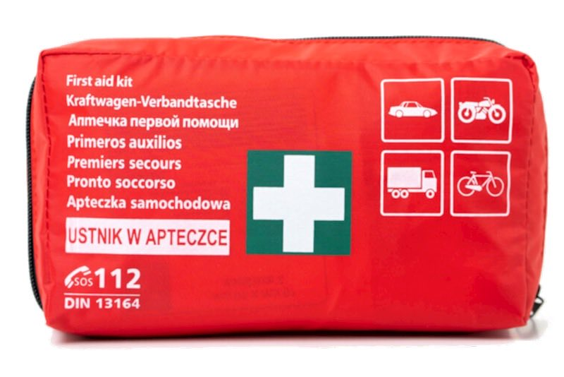
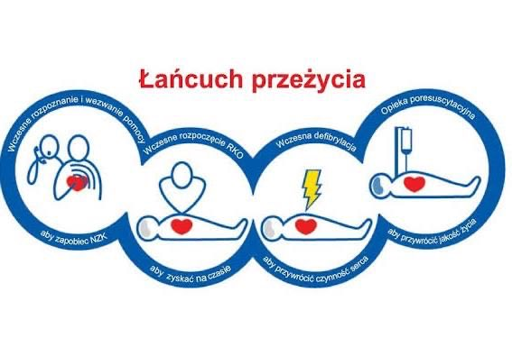

Pierwsza pomoc w szkole nauki jazdy

Podstawa prawna i dlaczego musisz udzielać pierwszej pomocy
Prawo jazdy to nie tylko umiejętność kierowania samochodem, ale także ogromna odpowiedzialność. Każdego dnia każdy Uczestnik Ruchu*) może znaleźć się w sytuacji, w której to od jego zachowania zależeć będzie ludzkie życie. Dlatego właśnie pierwsza pomoc jest tak ważna i z tego powodu musisz nauczyć się jej w trakcie kursu nauki jazdy.
W Polsce, zgodnie z Ustawą z dnia 5 stycznia 2011 r. o kierujących pojazdami (Dz.U. z 2025 r. poz. 1226), każda osoba ubiegająca się o prawo jazdy kategorii B musi przejść szkolenie z pierwszej pomocy. Ponadto, zgodnie z rozporządzeniem Ministra Infrastruktury i Budownictwa z dnia 4 marca 2016 r. (Dz.U. 2016 poz. 260), zajęcia te prowadzi Ratownik Medyczny w formie wykładów oraz ćwiczeń praktycznych trwających łącznie 4 godziny. W rezultacie odbycie szkolenia jest warunkiem koniecznym do przystąpienia do egzaminu państwowego na prawo jazdy.
Co więcej, art. 162 §1 Kodeksu Karnego wskazuje, że każdy Uczestnik Ruchu ma prawny obowiązek udzielić pierwszej pomocy osobom znajdującym się w stanie zagrożenia życia. Jeżeli świadek wypadku drogowego nie udzieli pomocy poszkodowanemu, może mu grozić kara do 3 lat pozbawienia wolności. Mimo to warto pamiętać, że jeszcze ważniejszym powodem, dla którego należy pomagać, jest własne sumienie. Trudno jest bowiem żyć ze świadomością, że w obliczu zagrożenia życia nie zrobiło się nic, aby uratować drugą osobę.

Czego nauczysz się na zajęciach z pierwszej pomocy w szkole nauki jazdy?
Podczas szkolenia dowiesz się wielu praktycznych i niezbędnych rzeczy. Przede wszystkim:
- Zrozumiesz prawne i moralne podstawy udzielania pomocy oraz motywacje, które stoją za obowiązkiem jej udzielania.
- Nauczysz się organizować akcję ratunkową, dbając zarówno o bezpieczeństwo własne, jak i poszkodowanego.
- Dowiesz się, jak skutecznie wzywać pomoc, aby ratownicy mogli reagować jak najszybciej.
- Poznasz wyposażenie apteczki pierwszej pomocy oraz nauczysz się poprawnie korzystać z jej elementów.
Następnie przejdziesz do podstawowych czynności ratowniczych, w tym:
- podstaw anatomii człowieka niezbędnych w pierwszej pomocy,
- sekwencji udzielania pomocy (tzw. łańcuch przeżycia),
- ułożenia poszkodowanego w pozycji bocznej ustalonej (pozycji bezpiecznej),
- zastosowania pozycji przeciwwstrząsowej,
- tamowania krwotoków i zakładania opatrunków,
- wykonywania resuscytacji krążeniowo-oddechowej (RKO) wraz z użyciem Automatycznego Defibrylatora Zewnętrznego (AED).
Kim jest Uczestnik Ruchu?
Uczestnik Ruchu oznacza pieszego, osobę poruszającą się przy użyciu urządzenia wspomagającego ruch, kierującego, a także każdą inną osobę przebywającą w pojeździe lub na pojeździe znajdującym się na drodze.
(Źródło: Ustawa z dnia 20 czerwca 1997 r. – Prawo o ruchu drogowym, Dz.U. 1997 nr 98 poz. 602 z późn. zm.)
https://isap.sejm.gov.pl/isap.nsf/download.xsp/WDU19970980602/U/D19970602Lj.pdf
OSK Tailor Nauka Jazdy Gdańsk
„Kurs prawa jazdy kat. B na miarę dla Ciebie”